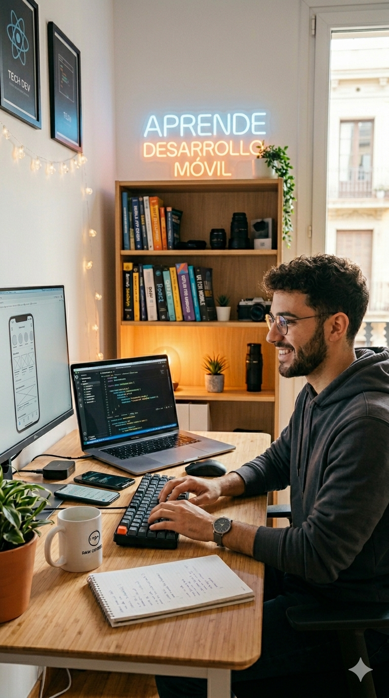

INFORMACIÓ
El Grau Superior en Desenvolupament d’Aplicacions Multiplataforma (DAM) està pensat per a estudiants interessats en la programació i el desenvolupament de software. Aquest cicle prepara professionals capaços de crear, implantar i mantenir aplicacions per a ordinadors, mòbils i altres dispositius digitals. L’alumnat aprendrà a treballar amb diferents llenguatges de programació, bases de dades i entorns de desenvolupament, adquirint competències molt valorades en el sector tecnològic.
Què aprendrà el vostre fill/a?
- Programació d’Aplicacions: Desenvoluparà aplicacions utilitzant llenguatges com Java, Python o Kotlin.
- Bases de Dades: Aprendrà a crear, gestionar i connectar bases de dades amb aplicacions informàtiques.
- Aplicacions Multiplataforma: Crearà programes compatibles amb diferents sistemes operatius i dispositius.
- Interfícies i Experiència d’Usuari: Dissenyarà aplicacions intuïtives, funcionals i adaptades a les necessitats dels usuaris.
